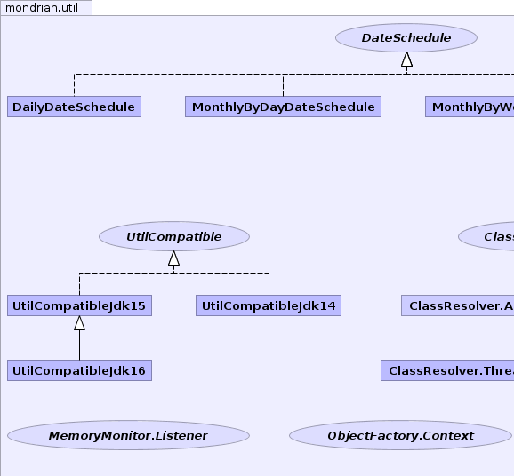
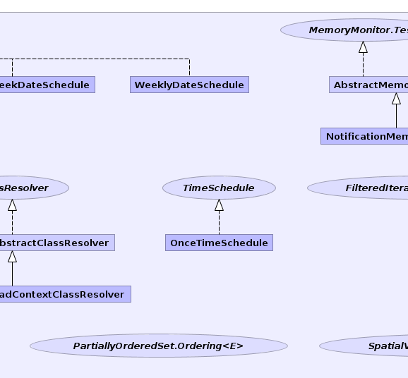
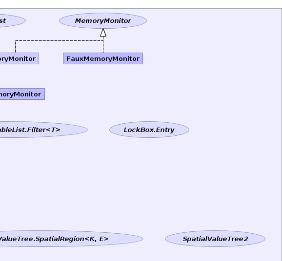
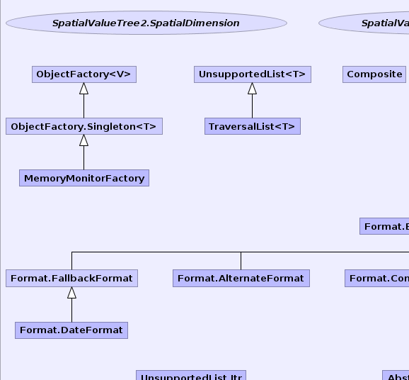
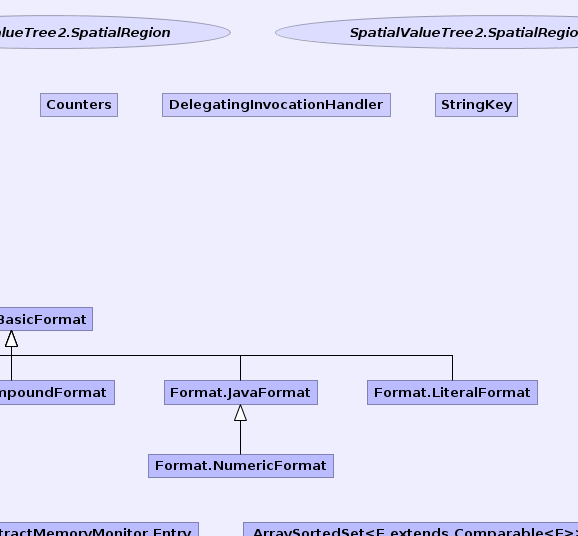
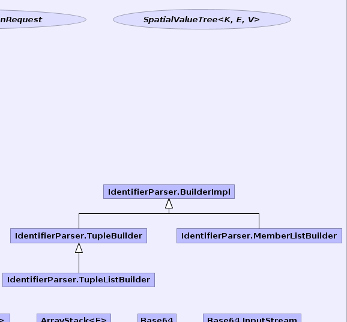
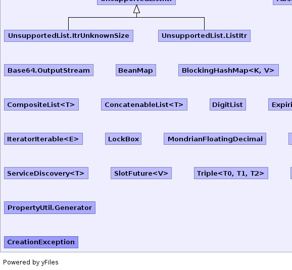
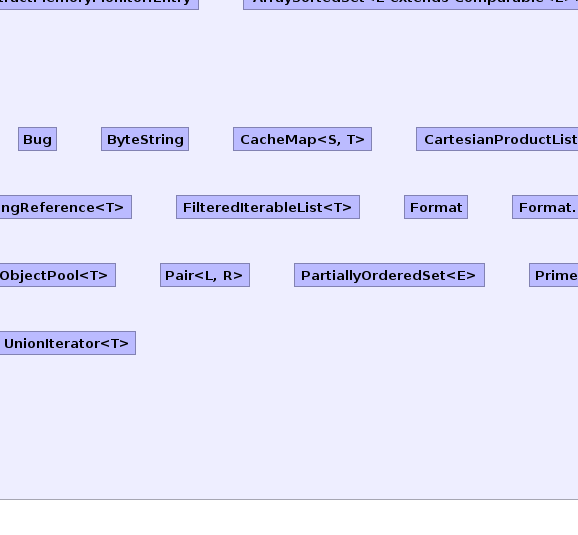
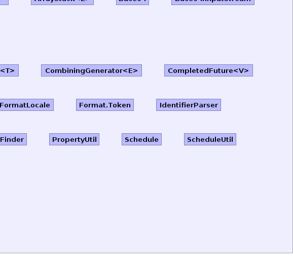

- Overview
- Package
- Class
- Tree
- Deprecated
- Index
- Help
| Interface | Description |
|---|---|
| ClassResolver |
Instantiates a class.
|
| DateSchedule |
A
DateSchedule returns a series of dates. |
| FilteredIterableList.Filter<T> |
Filter to determine which elements should be shown.
|
| LockBox.Entry |
Entry in a
LockBox. |
| MemoryMonitor |
API for Mondrian's memory monitors.
|
| MemoryMonitor.Listener |
A
MemoryMonitor client implements the Listener
interface and registers with the MemoryMonitor. |
| MemoryMonitor.Test |
This is an interface that a
MemoryMonitor may optionally
implement. |
| ObjectFactory.Context |
This is for testing only.
|
| PartiallyOrderedSet.Ordering<E> |
Ordering relation.
|
| SpatialValueTree<K,E,V> |
A SpatialValueTree is a multidimensional index of values.
|
| SpatialValueTree.SpatialRegion<K,E> |
Describes a spatial region within a
SpatialValueTree. |
| SpatialValueTree2 |
Variation of Luc's SpatialValueTree.
|
| SpatialValueTree2.SpatialDimension | |
| SpatialValueTree2.SpatialRegion | |
| SpatialValueTree2.SpatialRegionRequest |
A request for a region.
|
| TimeSchedule |
A
TimeSchedule generates a series of times within a day. |
| UtilCompatible |
Interface containing methods which are implemented differently in different
versions of the JDK.
|
| Class | Description |
|---|---|
| AbstractMemoryMonitor |
Abstract implementation of
MemoryMonitor. |
| AbstractMemoryMonitor.Entry |
Class used to associate
Listener and threshold. |
| ArraySortedSet<E extends Comparable<E>> |
Implementation of
SortedSet based on an array. |
| ArrayStack<E> |
Stack implementation based on
ArrayList. |
| Base64 |
Encodes and decodes to and from Base64 notation.
|
| Base64.InputStream |
A
Base64.InputStream will read data from another
java.io.InputStream, given in the constructor,
and encode/decode to/from Base64 notation on the fly. |
| Base64.OutputStream |
A
Base64.OutputStream will write data to another
java.io.OutputStream, given in the constructor,
and encode/decode to/from Base64 notation on the fly. |
| BeanMap |
View of an object as a map.
|
| BlockingHashMap<K,V> |
A limited Map implementation which supports waiting for a value
to be available when calling get().
|
| Bug |
Holder for constants which indicate whether particular issues have been
fixed.
|
| ByteString |
Collection of bytes.
|
| CacheMap<S,T> |
Map with limited size to be used as cache.
|
| CartesianProductList<T> |
List that generates the cartesian product of its component lists.
|
| ClassResolver.AbstractClassResolver |
Partial implementation of
ClassResolver. |
| ClassResolver.ThreadContextClassResolver |
Implementation of
ClassResolver that calls
Thread.getContextClassLoader() on the current thread. |
| CombiningGenerator<E> |
A list that, given a collection of elements, contains every possible
combination of those objects (also known as the
power set of those
objects).
|
| CompletedFuture<V> |
Implementation of
Future that has already completed. |
| Composite |
Composite collections.
|
| CompositeList<T> |
List composed of several lists.
|
| ConcatenableList<T> |
List backed by a collection of sub-lists.
|
| Counters |
A collection of counters.
|
| DailyDateSchedule |
A
DailyDateSchedule fires every day. |
| DelegatingInvocationHandler |
A class derived from
DelegatingInvocationHandler handles a
method call by looking for a method in itself with identical parameters. |
| DigitList |
DigitList handles the transcoding between numeric values and
strings of characters. |
| ExpiringReference<T> |
An expiring reference is a subclass of
SoftReference
which pins the reference in memory until a certain timeout
is reached. |
| FauxMemoryMonitor |
The
FauxMemoryMonitor implements the MemoryMonitor
interface but does nothing: all methods are empty. |
| FilteredIterableList<T> |
Iterable list which filters undesirable elements.
|
| Format |
Format formats numbers, strings and dates according to the
same specification as Visual Basic's
format() function. |
| Format.AlternateFormat |
AlternateFormat is an implementation of
Format.BasicFormat which
allows a different format to be used for different kinds of values. |
| Format.BasicFormat |
BasicFormat is the interface implemented by the classes which do all
the work.
|
| Format.CompoundFormat |
CompoundFormat is an implementation of
Format.BasicFormat where
each value is formatted by applying a sequence of format elements. |
| Format.DateFormat |
DateFormat is an element of a
Format.CompoundFormat which has a
value when applied to a Calendar object. |
| Format.FallbackFormat |
FallbackFormat catches un-handled datatypes and prints the original
format string.
|
| Format.FormatLocale |
A FormatLocale contains all information necessary to format objects
based upon the locale of the end-user.
|
| Format.JavaFormat |
JavaFormat is an implementation of
Format.BasicFormat which
prints values using Java's default formatting for their type. |
| Format.LiteralFormat |
LiteralFormat is an implementation of
Format.BasicFormat which
prints a constant value, regardless of the value to be formatted. |
| Format.NumericFormat |
NumericFormat is an implementation of
Format.BasicFormat which
prints numbers with a given number of decimal places, leading zeroes, in
exponential notation, etc. |
| Format.Token | |
| IdentifierParser |
Utilities for parsing fully-qualified member names, tuples, member lists,
and tuple lists.
|
| IdentifierParser.BuilderImpl |
Implementation of Builder that resolves segment lists to members.
|
| IdentifierParser.MemberListBuilder |
Implementation of Builder that builds a member list.
|
| IdentifierParser.TupleBuilder |
Implementation of Builder that builds a tuple.
|
| IdentifierParser.TupleListBuilder |
Implementation of Builder that builds a tuple list.
|
| IteratorIterable<E> |
Iterable over an iterator.
|
| LockBox |
Provides a way to pass objects via a string moniker.
|
| MemoryMonitorFactory |
The
MemoryMonitorFactory is used to get the application's
MemoryMonitor. |
| MondrianFloatingDecimal |
Representation of a number as a list of digits.
|
| MonthlyByDayDateSchedule |
A
MonthlyByDayDateSchedule fires on a particular set of days
every month. |
| MonthlyByWeekDateSchedule |
A
MonthlyByWeekDateSchedule fires on particular days of
particular weeks of a month. |
| NotificationMemoryMonitor |
The
NotificationMemoryMonitor class uses the Java5
memory management system to detect system low memory events. |
| ObjectFactory<V> |
Concrete derived classes of the generic
ObjectFactory class
are used to produce an implementation of an interface (a
normal interface implementation or a Proxy). |
| ObjectFactory.Singleton<T> |
Implementation of ObjectFactory
that returns only a single instance of the Object.
|
| ObjectPool<T> |
An
ObjectPool is a low-memory replacement for a
HashSet. |
| OnceTimeSchedule |
A
OnceTimeSchedule fires at one and only one time. |
| Pair<L,R> |
Pair of values.
|
| PartiallyOrderedSet<E> |
Partially-ordered set.
|
| PrimeFinder |
Not of interest for users; only for implementors of hashtables.
|
| PropertyUtil |
Utilities to generate MondrianProperties.java and mondrian.properties
from property definitions in MondrianProperties.xml.
|
| Schedule |
A
Schedule generates a series of time events. |
| ScheduleUtil |
Utility functions for
Schedule and supporting classes. |
| ServiceDiscovery<T> |
Utility functions to discover Java services.
|
| SlotFuture<V> |
Implementation of
Future that completes
when a thread writes a value (or an exception) into a slot. |
| StringKey |
Type-safe value that contains an immutable string.
|
| TraversalList<T> |
Implementation of
List for transposing an array of
lists. |
| Triple<T0,T1,T2> |
Tuple of three values.
|
| UnionIterator<T> |
Iterator over union of several
Iterable collections. |
| UnsupportedList<T> |
Implementation of
List where all methods throw
an UnsupportedOperationException exception except for the
isEmpty method. |
| UtilCompatibleJdk14 |
Implementation of
UtilCompatible which runs in
JDK 1.4. |
| UtilCompatibleJdk15 |
Implementation of
UtilCompatible which runs in
JDK 1.5. |
| UtilCompatibleJdk16 |
Implementation of
UtilCompatible that runs in
JDK 1.6. |
| WeeklyDateSchedule |
A
WeeklyDateSchedule fires every week. |
| Enum | Description |
|---|---|
| PropertyUtil.Generator |
| Exception | Description |
|---|---|
| CreationException |
|  |  |  |
|  |  |  |
|  |  |  |